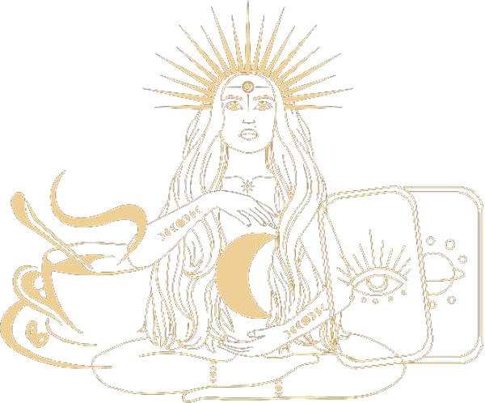

Tarot Cassandra
Kahve falı, tarot, katina ve daha fazlası: yorumları Cassandra karakteriyle yapay zekâ tarafından hazırlanan, eğlence amaçlı fal uygulaması.
İletişim: cassandraaofficial@gmail.com · tarotcassandra.com

Kahve falı, tarot, katina ve daha fazlası: yorumları Cassandra karakteriyle yapay zekâ tarafından hazırlanan, eğlence amaçlı fal uygulaması.
İletişim: cassandraaofficial@gmail.com · tarotcassandra.com